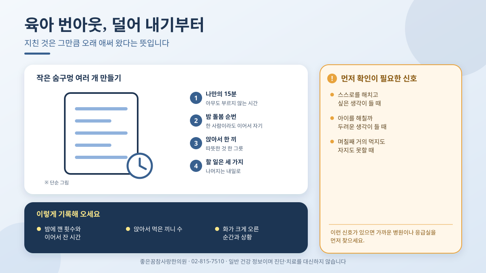

이종호 한의사 감수좋은꿈참사랑한의원 대표원장 (한의사 면허번호 19769)발행 2026-11-26 · 수정 2026-11-26
이 글의 차례
아이를 겨우 재우고 거실에 나오면 밤 열 시가 훌쩍 넘어 있습니다. 개수대에는 저녁 설거지가 쌓여 있고, 바닥에는 장난감이 흩어져 있습니다. 소파에 잠깐 앉았을 뿐인데 일어날 힘이 없습니다. 휴대폰을 들여다보다 문득 눈물이 납니다. 왜 우는지 스스로도 잘 모르겠습니다.
진료실에서 부모님들께 자주 듣는 말이 있습니다. "아이는 너무 예쁜데, 제가 너무 지쳤어요." 그리고 곧바로 덧붙이십니다. "이런 말 하면 안 되는 거죠." 저는 그 말씀을 들을 때마다, 얼마나 오래 혼자 참아 오셨을까 하는 생각이 듭니다.
아이를 사랑하는 마음과 몸과 마음이 지치는 것은 따로 움직입니다. 지쳤다고 해서 좋은 부모가 아닌 것도 아니고, 사랑이 부족한 것도 아닙니다. 쉬지 못하는 날이 몇 달, 몇 년 쌓이면 누구라도 바닥이 드러날 수 있습니다.
육아 번아웃은 진단명이라기보다 오래 쌓인 소진 상태를 가리키는 말입니다. 오늘 글에서는 이 소진이 어떤 모습으로 오는지, 단순한 피로와 무엇이 다른지, 그리고 조금씩 숨을 돌릴 틈을 어떻게 만들 수 있는지를 함께 정리해 보겠습니다.
육아 번아웃은 어떤 모습으로 오나요
육아 번아웃은 어느 날 갑자기 오기보다 조금씩 스며듭니다. 처음에는 그냥 피곤한 줄 알았다가, 어느 순간 예전의 내가 아닌 것 같다는 느낌이 듭니다. 진료실에서 자주 듣는 모습을 모아 보면 이렇습니다.
- 자고 일어나도 피곤이 풀리지 않고 몸이 늘 무겁다
- 아이의 작은 투정에도 화가 확 올라왔다가 곧 미안해진다
- 아이와 놀아 주는 시간이 즐겁기보다 버텨야 하는 시간처럼 느껴진다
- 혼자 있고 싶다는 생각이 자주 들고, 그런 자신이 싫어진다
- 입맛이 없거나, 반대로 밤늦게 군것질로 허기를 달랜다
- 머리가 멍하고 깜빡하는 일이 늘었다
이 가운데 여러 가지가 몇 주 넘게 이어진다면 잠깐의 피로라기보다 소진이 쌓인 상태일 수 있습니다. 스스로를 탓하기보다, 지금은 나를 돌봐야 할 때라는 신호로 받아들이시면 좋겠습니다.
왜 육아는 이렇게 사람을 지치게 할까요
육아의 피로는 몸의 피로와 마음의 피로가 한꺼번에 옵니다. 아이를 안고 들고 따라다니는 일은 생각보다 큰 몸의 노동입니다. 여기에 밤잠이 끊기는 날이 이어지면 몸이 회복할 틈이 사라집니다.
마음의 피로는 끝이 보이지 않는다는 데서 옵니다. 회사 일에는 퇴근이 있지만 육아에는 퇴근이 없습니다. 아이가 잠든 뒤에도 내일 준비와 집안일이 기다리고, 아이가 아프면 그 밤은 통째로 사라집니다. 늘 긴장한 채로 대기하는 상태가 오래 이어지는 셈입니다.
비교와 죄책감도 무게를 더합니다. 다른 집 아이는 벌써 말을 잘하는데, 다른 엄마 아빠는 저렇게 잘하는데 하는 생각이 스스로를 깎아 냅니다. 잘하고 싶은 마음이 클수록 작은 실수에도 마음이 크게 흔들립니다.
한의학에서는 이런 상태를 오래 쓰고 채우지 못해 기운과 혈이 함께 마른 모습으로 설명하기도 합니다. 이것은 진단명이 아니라 진찰할 때 몸의 경향을 살피는 전통적인 표현입니다. 얼굴이 창백하고 쉽게 숨이 차는 분, 열이 오르고 가슴이 답답한 분처럼 지친 모습도 사람마다 다릅니다.
아이의 나이에 따라 지치는 모습도 달라집니다
아기가 어릴 때는 몸의 피로가 가장 큽니다. 두세 시간마다 깨는 밤, 하루 종일 안고 달래는 낮이 이어지면서 잠과 끼니가 함께 무너집니다. 이 시기에는 무엇보다 이어서 자는 시간을 확보하는 것이 먼저입니다.
아이가 걷고 말하기 시작하면 몸의 피로에 마음의 피로가 더해집니다. 고집이 생기고 떼를 쓰는 아이와 하루 종일 실랑이를 하다 보면, 저녁이 되면 말할 기운조차 남지 않습니다. 같은 말을 수십 번 반복하는 일은 생각보다 사람을 많이 지치게 합니다.
아이가 학교에 다닐 무렵에는 일정 관리와 걱정이 무게를 더합니다. 등하교, 학원, 숙제, 친구 관계까지 챙기다 보면 머릿속이 늘 할 일 목록으로 가득 찹니다. 몸은 조금 편해졌는데 머리가 쉬지 못하는 시기라고 할 수 있습니다.
단순한 피로, 산후 우울과는 무엇이 다른가요
단순한 피로는 하루 이틀 푹 쉬면 꽤 회복됩니다. 주말에 누군가 아이를 맡아 주어 낮잠을 자고 나면 다시 힘이 나는 정도라면 아직 피로에 가깝습니다. 반면 쉬어도 회복되지 않고, 쉬는 시간마저 불안하다면 소진이 깊어진 것일 수 있습니다.
출산 뒤 몇 주에서 몇 달 사이에 기분이 계속 가라앉고, 아이를 돌보는 일 자체가 버겁고, 이유 없이 눈물이 나거나 불안이 커진다면 산후 우울을 함께 생각해 보아야 합니다. 이런 경우에는 산부인과나 정신건강의학과 상담을 함께 받아 보시길 권합니다.
두 주 넘게 거의 매일 기분이 가라앉고 좋아하던 일에도 흥미가 없으며, 잠과 입맛이 함께 무너졌다면 육아의 피로를 넘어 우울감이 깊어진 상태일 수 있습니다. 부끄러운 일이 아니니 전문 상담의 도움을 받는 것을 미루지 마세요.
스스로 점검해 보기
아래 질문에 솔직하게 답해 보세요. 점수를 매기려는 것이 아니라, 지금 나의 상태를 들여다보기 위한 질문입니다.
- 지난 일주일 동안 나만을 위한 시간이 30분이라도 있었나요?
- 밤에 깨지 않고 이어서 잔 날이 며칠이었나요?
- 하루 세끼 가운데 앉아서 제대로 먹은 끼니가 몇 번이었나요?
- 아이에게 화를 내고 나서 오래 자책한 날이 많았나요?
- 힘들다는 이야기를 털어놓을 사람이 있나요?
대답이 대부분 '없다'에 가깝다면, 지금 필요한 것은 더 노력하는 것이 아니라 덜어 내는 것입니다.
먼저 이렇게 여쭙니다
처음 오시면 저는 대략 이런 순서로 여쭙니다. 미리 생각해 오시면 이야기가 훨씬 수월해집니다.
- 아이는 몇 명이고, 낮과 밤의 돌봄은 누가 나눠 맡나요?
- 밤에 몇 번 깨고, 이어서 자는 시간은 얼마나 되나요?
- 끼니는 제때 드시나요? 커피와 단것은 얼마나 드시나요?
- 출산한 지 얼마나 되었고, 수유 중이신가요?
- 생리 주기와 양에 달라진 점이 있나요?
- 아이를 안거나 들면서 아픈 곳이 있나요?
모든 질문에 정확히 답하지 못하셔도 괜찮습니다. 요즘 하루가 어떻게 흘러가는지 편하게 이야기해 주시면 그 안에서 함께 찾아갑니다.
일상에서 먼저 해 볼 수 있는 것
육아 번아웃을 지날 때는 큰 변화보다 작은 숨구멍을 여러 개 만드는 쪽이 현실적입니다. 아래 가운데 지금 할 수 있는 것 하나부터 시작해 보세요.
- 하루에 15분이라도 아무도 나를 부르지 않는 시간을 정해 두기
- 배우자나 가족과 밤 돌봄 순번을 정해 한 사람이라도 이어서 자기
- 끼니는 거창하지 않게, 앉아서 따뜻한 것 한 그릇 먹기
- 아이가 낮잠 잘 때 집안일 대신 나도 함께 눕기
- 오늘 꼭 해야 할 일 세 가지만 정하고 나머지는 내일로 미루기
- 비슷한 시기의 부모와 짧게라도 이야기 나누기
도움을 청하는 일이 어렵게 느껴지실 수 있습니다. 하지만 육아는 원래 한 사람이 감당하기 어려운 일입니다. 가족, 이웃, 지역의 육아 지원 서비스, 아이 돌봄 서비스처럼 기댈 수 있는 곳을 하나라도 미리 알아 두시면 마음이 한결 든든해집니다.
몸을 조금 움직이는 것도 도움이 됩니다. 유모차를 끌고 해가 있는 시간에 동네를 한 바퀴 도는 것만으로도 기분이 달라지는 분이 많습니다. 햇빛을 보는 시간은 밤잠의 리듬을 잡는 데에도 보탬이 됩니다.
완벽한 부모가 되려는 마음을 조금 내려놓는 연습도 필요합니다. 오늘 반찬이 하나뿐이어도, 아이가 영상을 조금 더 보았어도, 집이 어질러져 있어도 괜찮습니다. 아이에게 가장 필요한 것은 지치지 않은 부모입니다.
화가 확 올라오는 순간에는
지친 상태에서는 아이의 작은 행동에도 화가 크게 올라옵니다. 그리고 화를 낸 뒤에는 긴 자책이 따라옵니다. 이 고리를 끊으려면 화를 참는 것보다, 화가 올라오는 순간 잠시 그 자리를 벗어나는 방법을 정해 두는 것이 현실적입니다.
아이가 안전한 곳에 있다면 잠깐 다른 방으로 가서 숨을 길게 세 번 내쉬고 돌아오세요. 찬물로 손을 씻거나 창문을 열고 바깥 공기를 마시는 것도 도움이 됩니다. 몇십 초의 틈이 말과 행동을 조금 부드럽게 바꿔 줍니다.
화를 낸 뒤에는 아이에게 짧게 사과하고 다시 안아 주면 됩니다. 부모도 실수할 수 있다는 것을 보여 주는 것 역시 아이에게는 좋은 배움이 됩니다. 스스로를 오래 탓하는 대신, 오늘 밤은 조금 일찍 쉬는 쪽을 고르세요.
커피와 단것으로 하루를 버티는 분도 많습니다. 당장은 기운이 나는 것 같지만 오후에 더 크게 처지고 밤잠을 흐트러뜨리기 쉽습니다. 커피는 오전에 한두 잔으로 정하고, 허기가 질 때는 견과류나 삶은 달걀, 바나나처럼 든든한 간식을 곁에 두시길 권합니다.
아이가 잠든 뒤 휴대폰을 오래 보는 시간이 나만의 자유처럼 느껴질 수 있습니다. 그 마음은 충분히 이해합니다. 다만 그 시간이 길어질수록 잠이 줄어 다음 날이 더 힘들어지니, 보는 시간을 조금씩 앞당겨 보세요.
배우자와 가족이 함께 알아 두면 좋은 것
곁에 있는 사람이 먼저 알아차려 주는 것만으로도 큰 위로가 됩니다. 말수가 줄고, 작은 일에 눈물을 보이며, 잠을 못 자는 날이 늘었다면 "괜찮아?"라는 질문보다 "오늘은 내가 볼게, 좀 쉬어"라는 말이 더 와닿을 수 있습니다.
돌봄을 돕는다는 표현보다 함께 맡는다는 마음이 중요합니다. 목욕, 재우기, 아침 준비처럼 한 가지를 통째로 맡아 주면 맡은 사람도 익숙해지고 쉬는 사람도 마음 놓고 쉴 수 있습니다. 주말 중 반나절씩 서로 혼자만의 시간을 갖는 것도 좋은 방법입니다.
한의원에서 함께 살필 수 있는 경우
- 쉬어도 피로가 풀리지 않고 몸이 늘 무거운 경우
- 잠이 얕고 꿈이 많으며 아이가 깨지 않아도 자주 깨는 경우
- 가슴이 답답하고 두근거리며 작은 일에 화가 오르는 경우
- 입맛이 없거나 소화가 더디고 변비가 이어지는 경우
- 아이를 안고 지내며 손목, 어깨, 허리가 아픈 경우
좋은꿈참사랑한의원에 오시면 먼저 아래 '먼저 확인이 필요한' 신호가 없는지부터 봅니다. 그다음 맥을 짚고 잠, 소화, 생리 주기, 두근거림을 여쭈며 지친 몸의 어느 쪽이 가장 힘들어하는지 함께 찾습니다.
진찰한 내용을 바탕으로 생활에서 덜어 낼 것 하나와 함께 침, 한약 상담 가운데 지금 상태에 맞는 것을 정합니다. 수유 중이거나 임신 가능성이 있다면 먼저 알려 주시고, 한약은 드시는 약을 확인한 뒤 신중하게 정합니다. 처방받은 약은 상의 없이 멈추지 않습니다.
아이와 함께 오셔야 하는 상황이라면 방문 전에 전화로 편한 시간을 여쭤 주세요. 진료를 받는 시간만큼은 잠시 나를 돌보는 시간이 되도록 함께 준비하겠습니다.
아이를 안고 지내며 생긴 손목과 어깨의 통증은 지친 마음을 더 무겁게 만들기도 합니다. 몸의 통증이 줄면 아이를 안는 일이 덜 버거워지고 마음의 여유도 조금 생깁니다. 아픈 곳이 있다면 참지 말고 함께 말씀해 주세요.
이렇게 기록해 오시면 상담이 쉬워집니다
거창한 일기가 아니어도 됩니다. 휴대폰 메모에 2주 정도 한 줄씩 적어 보세요.
- 밤에 깬 횟수와 이어서 잔 가장 긴 시간
- 앉아서 먹은 끼니 수
- 나만을 위해 쓴 시간
- 화가 크게 올라왔던 순간과 그때의 상황
- 몸에서 아팠던 곳
기록을 보면 유난히 힘든 요일과 시간대가 보이기 시작합니다. 그 시간에 도움을 받을 방법을 먼저 찾는 것이 다음 걸음이 됩니다.
지친 나에게 건네는 말
지금 이 글을 끝까지 읽으셨다면, 그 자체로 이미 자신을 돌보려는 첫걸음을 떼신 겁니다. 지친 것은 부족해서가 아니라 그만큼 오래 애써 왔다는 뜻입니다.
이번 주에는 나만을 위한 15분 하나만 정해 보세요. 그 시간에 무엇을 하든 괜찮습니다. 다음에 오시면 그 15분이 어땠는지부터 함께 이야기해 보겠습니다.
이런 증상은 먼저 확인이 필요합니다
- 스스로를 해치고 싶거나 아이를 해칠까 두려운 생각이 드는 경우
- 며칠째 거의 먹지도 자지도 못하고 아이를 돌볼 수 없을 만큼 무너진 경우
이런 신호가 있으면 한의원보다 가까운 병원이나 응급실을 먼저 찾으세요.
마음이 많이 힘들 때는 자살예방상담전화 ☎ 109에서 언제든 이야기를 나눌 수 있습니다.
함께 읽으면 좋은 글
- 일과 육아를 함께 하며 늘 지쳐 있을 때는 무엇부터 살피나요?
- 출산 뒤 우울감과 불안이 몇 주째 이어질 때(산후 우울)는 어떻게 살피나요?
- 의욕이 없고 번아웃처럼 지칠 때는 한의원에서 무엇을 먼저 묻나요?
- 아이를 안고 언덕길을 자주 오르내리는 부모의 허리와 골반이 불편할 때는 어떻게 살피나요?
- 충분히 쉬어도 몸이 늘 피곤한 만성피로는 어떤 점을 살펴보나요?

여쭙는 것
- 아이는 몇 명이고, 낮과 밤의 돌봄은 누가 나눠 맡나요?
- 밤에 몇 번 깨고, 이어서 자는 시간은 얼마나 되나요?
- 끼니는 제때 드시나요? 커피와 단것은 얼마나 드시나요?
생활에서 해 볼 것
- 하루에 15분이라도 아무도 나를 부르지 않는 시간을 정해 두기
- 배우자나 가족과 밤 돌봄 순번을 정해 한 사람이라도 이어서 자기
- 끼니는 거창하지 않게, 앉아서 따뜻한 것 한 그릇 먹기
한의원에서 함께 살필 것
- 쉬어도 피로가 풀리지 않고 몸이 늘 무거운 경우
- 잠이 얕고 꿈이 많으며 아이가 깨지 않아도 자주 깨는 경우
- 가슴이 답답하고 두근거리며 작은 일에 화가 오르는 경우
먼저 확인이 필요한 신호
- 스스로를 해치고 싶거나 아이를 해칠까 두려운 생각이 드는 경우
- 며칠째 거의 먹지도 자지도 못하고 아이를 돌볼 수 없을 만큼 무너진 경우
한눈에 보는 표
| 구분 | 핵심 |
|---|---|
| 여쭙는 것 | 아이는 몇 명이고, 낮과 밤의 돌봄은 누가 나눠 맡나요? 밤에 몇 번 깨고, 이어서 자는 시간은 얼마나 되나요? |
| 생활에서 해 볼 것 | 하루에 15분이라도 아무도 나를 부르지 않는 시간을 정해 두기 배우자나 가족과 밤 돌봄 순번을 정해 한 사람이라도 이어서 자기 |
| 한의원에서 함께 살필 것 | 쉬어도 피로가 풀리지 않고 몸이 늘 무거운 경우 잠이 얕고 꿈이 많으며 아이가 깨지 않아도 자주 깨는 경우 |
| 먼저 확인이 필요한 신호 | 스스로를 해치고 싶거나 아이를 해칠까 두려운 생각이 드는 경우 며칠째 거의 먹지도 자지도 못하고 아이를 돌볼 수 없을 만큼 무너진 경우 |
자주 묻는 질문
아이가 예쁜데도 지치는 제가 이상한 건가요?
전혀 그렇지 않습니다. 아이를 사랑하는 마음과 몸과 마음이 지치는 것은 따로 움직입니다. 지쳤다는 것은 그만큼 오래 애써 왔다는 뜻이니, 지금은 나를 돌볼 때라는 신호로 받아들여 주세요.
수유 중인데 한의원 진료를 받아도 되나요?
처음에 수유 중이라고 꼭 알려 주세요. 그에 맞춰 진료 방향을 정하고, 한약은 드시는 약과 수유 상황을 확인한 뒤 신중하게 정합니다.
아이를 데리고 가도 되나요?
방문 전에 전화로 편한 시간을 여쭤 주시면 함께 준비하겠습니다. 가능하다면 잠시라도 아이를 맡기고 오시면 진료 시간이 나를 돌보는 시간이 될 수 있습니다.
육아 번아웃과 산후 우울은 어떻게 구분하나요?
출산 뒤 기분이 몇 주째 계속 가라앉고 불안과 눈물이 이어진다면 산후 우울을 함께 생각해 보아야 합니다. 산부인과나 정신건강의학과 상담을 함께 받아 보시길 권합니다.
시간이 없어서 쉴 수가 없어요.
긴 휴식보다 하루 15분이라도 나를 부르지 않는 시간을 만드는 것부터 시작해 보세요. 밤 돌봄 순번을 정해 한 사람이라도 이어서 자는 것도 큰 도움이 됩니다.
좋은꿈참사랑한의원은 재진 때 지난번 이야기부터 이어서 여쭙니다. 진료시간과 예약은 오시는 길에서 확인하세요.
어디서 상담받을 수 있나요?
좋은꿈참사랑한의원은 서울 동작구 만양로2길 2 신성빌딩 3층·5층(서울 동작구 상도동, 7호선 상도역 3번 출구 근처)에 있습니다. 한의사 3명(이종호 대표원장, 조영기 수석진료원장, 정원영 진료원장)이 진료합니다. 진료시간은 평일 09:30~20:00(점심 13:00~14:00), 토·일·공휴일 09:30~15:00이며, 방문 전 전화로 확인을 권합니다. 예약은 네이버 예약, 카카오톡 상담, 전화 02-815-7510로 받습니다.
이 글은 일반적인 건강 정보이며 개인의 진단이나 치료를 대신하지 않습니다. 증상이 있거나 복용 중인 약이 있다면 진료를 통해 확인하세요. 치료 효과는 개인마다 다를 수 있습니다.
작성 기준: 일반적으로 알려져 있는 건강 정보를 참고해 정리했습니다(대표원장 감수). 증상 기록은 1~2주 동안 하루 1회, 비슷한 시간에 적어 오시면 지난 상태와 비교하기 쉽습니다.